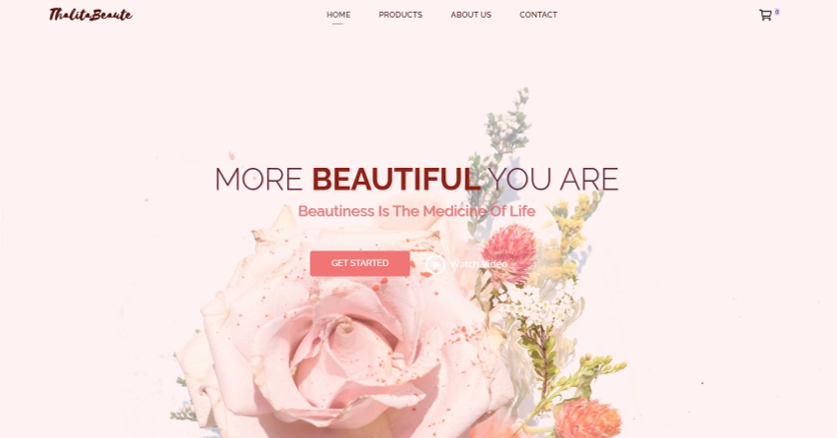
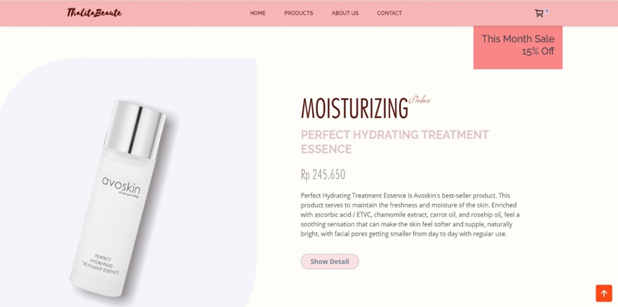

Client : Thalita Beaute
Year : 2020
Project ini adalah pembuatan sebuah website toko online yang memiliki nama brand Thalita Beaute. Brand Thalita Beauty ini adalah sebuah brand reseller yang menjual produk-produk skin-care dari Avoskin. Produk yang dijualnya adalah berupa produk-produk kecantikan dan perawatan kulit. Oleh karena peminat produk-produk ini adalah wanita, maka saya memilih tema website ini adalah kelembutan.
Tema
Tema yang saya gunakan pada website ini adalah kelembutan. Sehingga warna yang dominan pada website ini adalah warna merah muda dan warna-warna pastel yang memiliki opacity dibawah 1. Lalu pada bagian hero web tersebut saya memberikan gambar bunga untuk menegaskan sebuah kelembutan.
 Navigation Bar
Terdapat 6 buah link atau tombol yang dapat diakses oleh user, yaitu :
- logo thalitabeaute yang mengarahkan ke halaman utama (home).
- Link “home” juga untuk mengarahkan ke halaman home.
- Link “product” mengarahkan user ke halaman produk-produk yang dijual pada website ini.
- Link about us, dan
- Link contact mengarahkan user pada id=about dan id=contact yang terdapat pada halaman home.
- tombol logo “cart” pada sisi kanan atas web. Pada tombol tersebut terdapat angka yang merupakan indeks jumlah barang yang dibeli oleh pelanggan.
Cart
Apabila tombol cart di-klik maka akan muncul sebuah sidebar dari sisi kanan halaman website. Lalu tampilan body akan menghitam untuk memberikan kesan kontras. Tampilan yang interaktif ini saya buat menggunakan jquery dan css

Tampilan Isi Cart
Side-bar cart adalah sebuah tampilan yang berisi data barang yang dibeli oleh user. Side-bar cart akan secara otomatis terisi apabila user meng-klik sebuah produk. Proses pengambilan data dilakukan dengan jquery ajax. Sehingga proses request dilakukan secara asinkronus dibelakang layar tanpa harus reload halaman. Hal ini akan membuat User merasa nyaman berselancar
Ketika user menyimpan belanjaannya pada cart, data tersebut akan tetap tersimpan meskipun user telah menutup browsernya. Hal ini karena data yang diinput oleh user akan tersimpan pada cookies session pada browsernya.Saya membuat program session ini menggunakan variabel $_SESSION pada php. Lalu session ini akan tersimpan selama 24 jam pada browser.
Halaman Checkout
Pada halaman checkout, saya membuat sebuah form yang akan diisi data oleh user. Form akan dikirim ke halaman order dengan metode “post”. Ketika tombol “Pay Now” di-klik maka halaman Chekout akan berubah tampilannya dan data-data user akan tersimpan pada session. Kemudian pada sisi kanan halaman, ditampilkan detail produk yang akan dibeli beserta harganya agar user dapat melihat dengan jelas produk apa saja yang akan dibelinya.
Halaman Order
Ketika user melakukan klik pada tombol "Pay Now" maka tampilan halaman Checkout akan pindah ke halaman order seperti gambar dibawah ini. Apabila user telah sampai pada tampilan ini, user tidak bisa kembali ke halaman sebelumnya. Saya memprogram tiap-tiap halaman agar melakukan redirect ke halaman order apabila session dengan index ‘pembeli’ telah diset. Session ‘pembeli’ ini diset ketika user melakukan submit data ("Pay Now") yang dilakukan pada halaman checkout. Tujuan dari program redirecting ini adalah memudahkan user membuka kembali halaman order yang sudah berisi data dirinya. Ketika user telah sampai pada halaman ini, mereka mungkin akan pergi melakukan pembayaran, dan halaman ini sangat penting untuk melakukan proses pembayaran. Sehingga dengan adanya program ini maka user akan terhindar dari pengisian data yang berulang-ulang. Apabila user ingin kembali ke halaman sebelumnya atau halaman lainnya, maka user bisa meng-klik tombol “Cancel Order”. Ketika tombol tersebut di-klik, session dengan index “pembeli akan di-unset” sehingga user bisa kembali ke halaman sebelumnya.
Finish Payment
Ketika tombol “Finish Payment” di-klik, tampilan halaman order akan berubah seperti gambar dibawah ini. Perubahan tampilan ini hanya sebagian saja tanpa reload halaman.
Data yang ada pada session akan dikirim ke database. Data pada session “pembeli” akan dikirim ke tabel calon_pembeli, lalu data pada session “keranjang” akan dikirim ke tabel “pembelian”. Pengiriman data dilakukan dengan Jquery Ajax sehingga tidak terjadi reload halaman. Kemudian penyimpanan data ke database dilakukan dengan php dan mysqli_query(). Setelah data terkirim, session dengan indeks "keranjang" akan di-unset. Oleh karena itu ketika user berpindah ke halaman lain, maka isi cart nya akan kosong dan siap untuk diisi kembali.
URL dan SSL

Pada website ini saya melakukan penataan pada url yang ditampilkan. Saya menghapus ekstensi “.php” yang biasanya tampil pada url, sehingga website terlihat lebih professional dan aman dari hacker. Lalu, request GET saya ganti menjadi POST agar tidak ada satupun data yang ditampilkan di url.
Website ini juga diinstal dan diaktifkan sertifikat SSL (Secure Socket Layer) sehingga website ini dapat menggunakan protokol HTTPS untuk membuat koneksi yang lebih aman dengan server. Website yang melakukan koneksi dengan HTTPS terdapat gambar gembok pada sebelum tulisan url-nya. Sehingga website menjadi lebih terpercaya, lebih professional dan juga meningkatkan ranking website di mata Google.